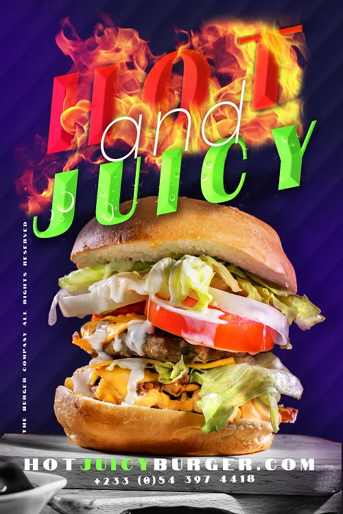
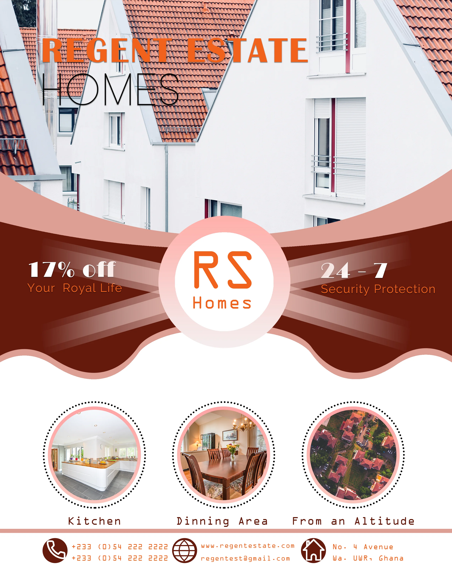
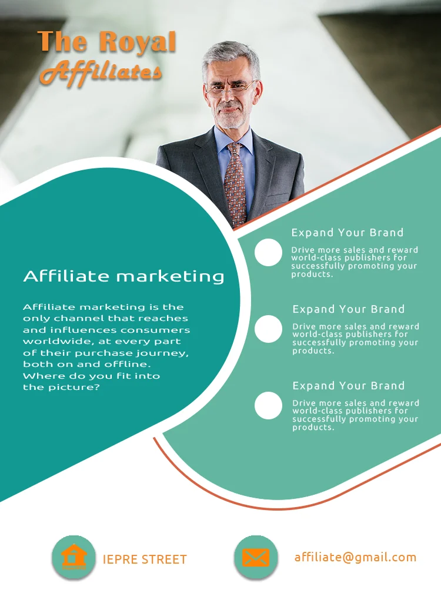
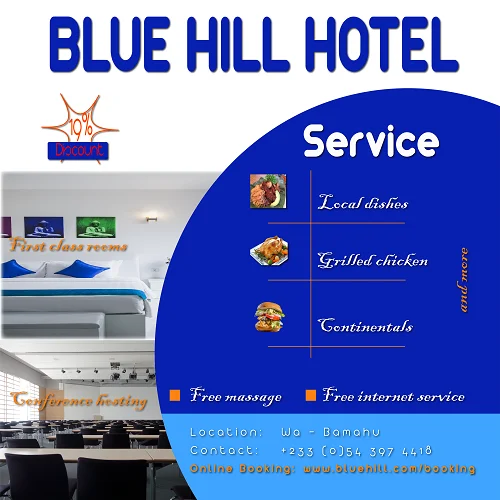

Zacchaeus Napuo
Web Application Developer and Graphics Designer
I am a Web Developer. I also 💛 Graphics Design
Education
| Institution | Programme |
|---|---|
| AmaliTech training Academy | Digital & Information Technology |
| The App brewery | Complete Web Application Development Bootcamp |
| Catholic University College of Ghana, Fiapre | Bsc. Computer Science |
Work Experience
| Dates | Work |
|---|---|
| 01/09/2018–30/08/2019 | University Research Assistant, Regentropfen College of Applied Sciences, Bolgatanga (Ghana) |
| 01/08/2017–31/08/2018 | Eaching Assistant (National Service), Regentropfen College of Applied Sciences, Bolgatanga (Ghana) |
Voluntary Experience
| Dates | Event/Activity |
|---|---|
| February, 2014 | Springboard roadshow foundation and, Legacy and Legacy, Sunyani: Volunteer with Springboard Service Team. |
| 08/01/2017–23/01/2017 | Industrial Internship, Medi@Tech Company, Cocody, Abidjan (Côte D’ivoire) |
Skills
|
|
Seminars and Workshops
Professional and Career Development Seminar (Professional Time Management, Advanced Project Management, Personal branding and Successful Job Application) organized by the Regentropfen College of Applied Sciences, Kansoe. It took place from the 20th to the 21st April, 2018. Facilitators, Dr. Hanno Hausmann (Senior Expert, Bonn, German), Mr. Frank Uhland (Senior Expert, Bonn, German), Mr. Hermann-Josef Mueller (Senior Expert, Bonn, German) and Rev. Dr. Moses Asaah Awinongya, SVD (President of ReCAS).
Workshop on Quality Assurance in Higher Educational Institutions organized by Regentropfen College of Applied Sciences, Namoo, for Academic and Administrative staff on 6th September, 2017. Facilitator: Prof. Elias N K Sowley, Director, Academic Planning and Quality Assurance Unit, University for development studies (UDS), Tamale, Ghana.
Certificate of participation awarded by the Royal Bank for attending a Financial Empowerment Seminar on the theme: Securing your Financial Future. April, 2017. Facilitators: Lioba Yamaale Guo, branch Manager, Sunyani branch and Kingsley Deladem Mensah, Sales/Credit Officer, Sunyani branch.
Certificate of Appreciation awarded by the Faculty of Information and Communication Sciences and Technology of Catholic University of Ghana, Fiapre for unwavering and meritorious service within the faculty as a student member.
A Leadership formation Programme organized by Pax Romana on 25th October, 2014 facilitated by Mr. Alex Anthony Boakye-Babo.
Seminar on the theme: Exploration with Integrity organized by Springboard Road Show Foundation and, Legacy and Legacy on 28th January, 2015. Facilitators: Mr. Albert Ocran and Mrs. Comfort Ocran.
Robotics training Workshop organized by the Metro Institute of Innovation and Technology at Catholic University College of Ghana, Fiapre, on 24th April, 2015. Facilitator: Benjamin Nortey.
Some Designs




Social Media
Leadership Roles
- Member of Electoral Commission, Catholic University College of Ghana, Fiapre (2014/2015).
- President of the Society of St. Vincent de Paul, Catholic University College of Ghana, Fiapre (2014/2015).
- Assistant Organizer of Pax Choir, CUCG (2014/2015).
- A member of the Publicity Committee of Pax Romana in CUCG (2014/2015).
- Liturgical committee member in St Cyprian Minor Seminary SHS (2010-2013).
- Compound overseer, St Paul’s Methodist Junior High School (2007-2010).